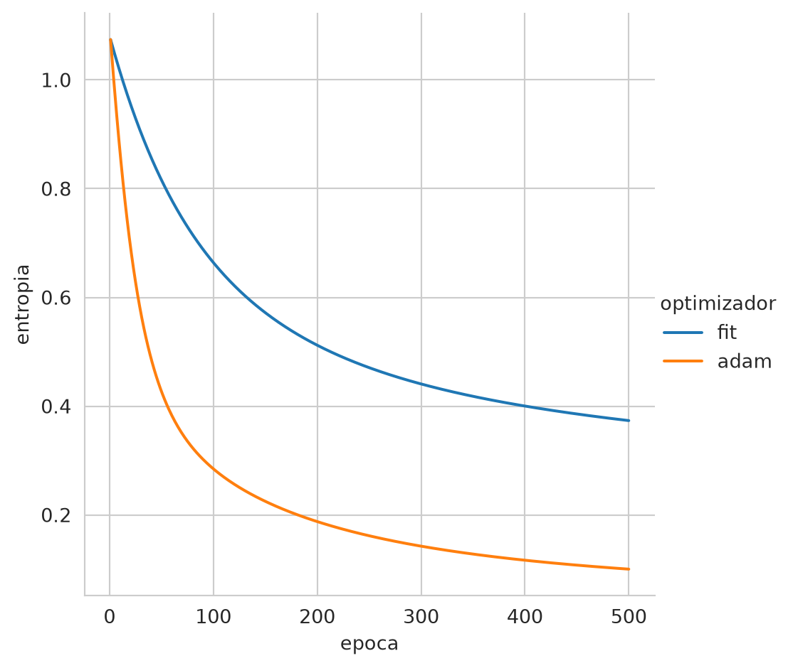

import jax
import jax.lax as lax
import jax.numpy as jnp
import optax
from sklearn.datasets import load_iris, load_digits
from sklearn.preprocessing import StandardScaler
from sklearn.model_selection import train_test_split
import numpy as np
import pandas as pd
import seaborn as sns11 Redes Neuronales
El objetivo de la unidad es conocer, diseñar y aplicar redes neuronales artificiales para problemas de regresión y clasificación.
11.1 Paquetes usados
11.2 Introducción
Las redes neuronales son sin duda uno de los algoritmos de aprendizaje supervisado que mas han tomado auge en los últimos tiempos. Para iniciar la descripción de redes neuronales se toma de base el algoritmo de Regresión Logística (Sección 10.5) pero en el caso de múltiples clases, es decir, Regresión Logística Multinomial.
11.3 Regresión Logística Multinomial
La idea de regresión logística es modelar \(\mathbb P(\mathcal Y=y \mid \mathcal X=\mathbf x)=\textsf{Ber}(y \mid \textsf{sigmoid}(\mathbf w \cdot \mathbf x + w_0)),\) es decir, que la clase \(y\) esta modelada como una distribución Bernoulli con parámetro \(\textsf{sigmoid}(\mathbf w \cdot \mathbf x + w_0).\) Siguiendo está definición que es equivalente a la mostrada anteriormente, se puede modelar a un problema de multiples clases como \(\mathbb P(\mathcal Y=y \mid \mathcal X=\mathbf x)=\textsf{Cat}(y \mid \textsf{softmax}(W \mathbf x + \mathbf w_0)),\) es decir, que la clase proviene de una distribución Categórica con parámetros \(\textsf{softmax}(W \mathbf x + \mathbf w_0),\) donde \(W \in \mathbb R^{K \times d},\) \(\mathbf x \in \mathbb R^d\) y \(\mathbf w_0 \in \mathbb R^d.\)
La función \(\textsf{softmax}(\mathbf v)\), donde \(\mathbf v = W \mathbf x + \mathbf w_0\) está definida como:
\[ \mathbf v_i = \frac{\exp \mathbf v_i}{\sum_{j=1}^K \exp \mathbf v_j}. \]
La función jax.nn.softmax implementa \(\textsf{softmax}\); en el siguiente ejemplo se calcula para el vector [2, 1, 3]
jax.nn.softmax(np.array([2, 1, 3]))Array([0.24472848, 0.09003057, 0.66524094], dtype=float32)Se puede observar que \(\textsf{softmax}\) transforma los valores del vector \(\mathbf v\) en probabilidades.
Para seguir explicando este tipo de regresión logística se utilizará el problema del Iris, el cual se obtiene de la siguiente manera, es importante notar que las entradas están normalizadas para tener media cero y desviación estándar uno.
D, y = load_iris(return_X_y=True)
normalize = StandardScaler().fit(D)
D = normalize.transform(D)El siguiente paso es generar el modelo de la Regresión Logística Multinomial, el cual depende de una matriz de coeficientes \(W \in \mathbb R^{K \times d}\) y \(\mathbf w_0 \in \mathbb R^d.\) Los parámetros iniciales se puede generar con la función parametros_iniciales tal y como se muestra a continuación.
n_labels = np.unique(y).shape[0]
def parametros_iniciales(key=0):
key = jax.random.PRNGKey(key)
d = D.shape[1]
params = []
normal = jax.random.normal
sqrt = jnp.sqrt
for _ in range(n_labels):
key, subkey = jax.random.split(key)
_ = dict(w=normal(subkey, (d, )) * sqrt(2 / d),
w0=jnp.ones(1))
params.append(_)
return paramsUtilizando los parámetros en el formato anterior, hace que el modelo se pueda implementar con las siguientes instrucciones. Donde el ciclo es por cada uno de los parámetros de las \(K\) clases y la última línea calcula el \(\textsf{softmax}.\)
@jax.jit
def modelo(params, X):
o = []
for p in params:
o.append(X @ p['w'] + p['w0'])
return jax.nn.softmax(jnp.array(o), axis=0).TUna característica importante es que la función de perdida, en este caso, a la Entropía Cruzada (Sección 4.2.7), requiere codificada la probabilidad de cada clase en un vector, donde el índice con probabilidad \(1\) corresponde a la clase, esto se puede realizar con el siguiente código.
y_oh = jax.nn.one_hot(y, n_labels)Ahora se cuenta con todos los elementos para implementar la función de Entropía Cruzada para múltiples clases, la cual se muestra en el siguiente fragmento.
@jax.jit
def media_entropia_cruzada(params, X, y_oh):
hy = modelo(params, X)
return - (y_oh * jnp.log(hy)).sum(axis=1).mean()11.3.1 Optimización
El siguiente paso es encontrar los parámetros del modelo, para esto se utiliza el método de optimización visto en Regresión Logística ( Sección 10.5) con algunos ajustes. Lo primero es que se desarrolla todo en una función fit que recibe el parámetro \(\eta\), los parámetros a identificar y el número de épocas, es decir, el número de iteraciones que se va a realizar el procedimiento.
Dentro de la función fitse observa la función update que calcula los nuevos parámetros, también regresa el valor del error, esto para poder visualizar como va aprendiendo el modelo. La primera linea después de la función update genera la función que calculará el valor y el gradiente de la función media_entropia_cruzada. Finalmente viene el ciclo donde se realizan las actualizaciones de los parámetros y se guarda el error calculado en cada época.
def fit(eta, params, epocas=500):
@jax.jit
def update(params, eta, X, y_oh):
_ , gs = error_grad(params, X, y_oh)
return _, jax.tree_map(lambda p, g: p - eta * g,
params, gs)
error_grad = jax.value_and_grad(media_entropia_cruzada)
error = []
for i in range(epocas):
_, params = update(params, eta, D, y_oh)
error.append(_)
return params, error11.3.2 Optimización Método Adam
Como se había visto en la Sección 10.6 existen diferentes métodos para encontrar los parámetros, en particular en esta sección se utilizará el método Adam (implementado en la librería optax) para encontrar los parámetros de la Regresión Logística Multinomial. Se decide utilizar este método dado que su uso es frecuente en la identificación de parámetros de redes neuronales.
Siguiendo la misma estructura que la función fit, la función adam recibe tres parámetros el primer es la instancia de optimizador, la segunda son los parámetros y finalmente el número de épocas que se va a ejecutar. La primera línea de la función update (que se encuentra en adam) calcula el valor de la función de error y su gradiente, estos son utilizados por optimizer.update para calcular la actualización de parámetros así como el nuevo estado del optimizador, los nuevos parámetros son calculados en la tercera línea y la función regresa los nuevos parámetros, el estado del optimizador y el error en esa iteración. La primera línea después de update inicializa el optimizador, después se general la función que calculará el valor y gradiente de la función media_entropia_cruzada. El ciclo llama la función update y guarda el error encontrado en cada época.
def adam(optimizer, params, epocas=500):
@jax.jit
def update(params, opt_state, X, y_oh):
loss_value, grads = error_grad(params,
X,
y_oh)
updates, opt_state = optimizer.update(grads,
opt_state,
params)
params = optax.apply_updates(params, updates)
return params, opt_state, loss_value
opt_state = optimizer.init(params)
error_grad = jax.value_and_grad(media_entropia_cruzada)
error = []
for i in range(epocas):
params, opt_state, loss_value = update(params,
opt_state,
D,
y_oh)
error.append(loss_value)
return params, error11.3.3 Comparación entre Optimizadores
Los optimizadores descritos anteriormente se pueden utilizar con el siguiente código, donde la primera línea calcula los parámetros iniciales, después se llama a la función fit para encontrar los parámetros con el primer método. La tercera línea genera una instancia del optimizador Adam; el cual se pasa a la función adam para encontrar los parámetros con este método.
params = parametros_iniciales()
p1, error1 = fit(1e-2, params)
optimizer = optax.adam(learning_rate=1e-2)
p2, error2 = adam(optimizer, params)/var/folders/wk/rlx2pk5j42v6mpjfd_0842c00000gn/T/ipykernel_76576/2693901055.py:5: DeprecationWarning:
jax.tree_map is deprecated: use jax.tree.map (jax v0.4.25 or newer) or jax.tree_util.tree_map (any JAX version).
La Figura 11.1 muestra cómo la media de la Entropía Cruzada se minimiza con respecto a las épocas para los dos métodos. Se puede observar como el método adam converge más rápido y llega a un valor menor de Entropía Cruzada.
Código
df = pd.DataFrame(dict(entropia=np.array(error1),
optimizador='fit',
epoca=np.arange(1, 501)))
df = pd.concat((df, pd.DataFrame(dict(entropia=np.array(error2),
optimizador='adam',
epoca=np.arange(1, 501)))))
_ = sns.relplot(data=df, x='epoca', y='entropia', hue='optimizador', kind='line')
Finalmente la exactitud (Sección 4.2.2) en el conjunto de entrenamiento del modelo estimado con fit es \(0.8867\) (i.e., (y == modelo(p1, D).argmax(axis=1)).mean()) y del estimado con adam es \(0.9667\).
11.4 Perceptrón
La unidad básica de procesamiento en una red neuronal es el perceptrón, el cual es un viejo conocido de Discriminantes Lineales (Capítulo 9), es decir, \(g(\mathbf x) = \mathbf w \cdot \mathbf x + \mathbf w_0.\) En problemas de clasificación binaria se encuentran los parámetros de \(g(\mathbf x)\) de tal manera que genera un hiperplano y se clasifican los elementos de acuerdo al lado positivo o negativo del hiperplano. En problemas de Regresión (Sección 3.10) los parámetros de \(g(\mathbf x)\) se encuentran utilizando mínimos cuadrados.
En el case de tener \(K>2\) clases entonces el problema se puede afrontar entrenando \(g_k(\mathbf x)\) perceptrones (\(k=1, \ldots, K\)) tal y como se realizó Discriminantes Lineales (Sección 9.3.3). De manera concisa se puede definir a \(g: \mathbb R^d \rightarrow \mathbb R^K\), es decir, \(g(\mathbf x)=W \mathbf x + \mathbf w_0\) tal y como se realizó en Regresión Logística Multinomial (Sección 11.3). En el caso de desear conocer la probabilidad de pertenencia a una clase, en el caso binario se utilizó \(g(\mathbf x) = \textsf{sigmoid}(\mathbf w \cdot \mathbf x + \mathbf w_0)\) y en el caso multiclase \(g(\mathbf x) = \textsf{softmax}(W \mathbf x + \mathbf w_0).\)
11.4.1 Composición de Perceptrones Lineales
Se puede realizar una composición de perceptrones de la siguiente manera, sea \(g_1: \mathbb R^d \rightarrow \mathbb R^{d'}\) y \(g_2: \mathbb R^{d'} \rightarrow \mathbb R^K,\) es decir \(g = g_2 \circ g_1.\) Realizando está composición en las ecuaciones descritas anteriormente se tiene
\[ \begin{split} \hat{\mathbf{y}}_1 &= g_1(\mathbf x) \\ \hat{\mathbf y} &= g_2(\hat{\mathbf{y}}_1) \end{split} \]
Expandiendo las ecuaciones anteriores se tiene
\[ \begin{split} \hat{\mathbf{y}}_1 &= W_1 \mathbf x + \mathbf w_{1_0}\\ \hat{\mathbf y} &= W_2 \hat{\mathbf{y}}_1 + \mathbf w_{2_0}\\ &= W_2 (W_1 \mathbf x + \mathbf w_{1_0}) + \mathbf w_{2_0}\\ &= W_2 W_1 \mathbf x + W_2 \mathbf w_{1_0} + \mathbf w_{2_0}\\ &= W \mathbf x + \mathbf w_0 \end{split} \]
como se puede observar la composición realizada da como resultado una red donde se tienen que identificar \(W \in \mathbb R^{K \times d}\) y \(\mathbf w_0 \in \mathbb R^d,\) es decir, son \(K\) perceptrones equivalentes al modelado de Regresión Logística Multinomial. Esto es porque la composición fue con funciones lineales.
11.5 Perceptrón Multicapa
Para evitar que la composición de perceptrones colapsen a una función equivalente, es necesario incluir una función no lineal, sea \(\phi\) esta función no lineal, (a esta función se le conoce como función de activación) entonces se puede observar que la composición \(g=g_2 \circ g_1\) donde \(g_1 = \phi(W_1 \mathbf x + \mathbf w_{1_0})\) resulta en
\[ \begin{split} \hat{\mathbf{y}}_1 &= \phi(W_1 \mathbf x + \mathbf w_{1_0}) \\ \hat{\mathbf y} &= W_2 \hat{\mathbf{y}}_1 + \mathbf w_{2_0} \end{split}. \]
A la estructura anterior se le conoce como una red neuronal de una capa oculta, la salida de la capa oculta está en \(\hat{\mathbf{y}}_1\) y la salida de la red es \(\hat{\mathbf y}.\) Siguiendo la notación anterior se puede definir una red neuronal con dos capas ocultas de la siguiente manera
\[ \begin{split} \hat{\mathbf{y}}_1 &= \phi(W_1 \mathbf x + \mathbf w_{1_0}) \\ \hat{\mathbf y}_2 &= \phi_2(W_2 \hat{\mathbf{y}}_1 + \mathbf w_{2_0})\\ \hat{\mathbf y} &= (W_3 \hat{\mathbf{y}}_2 + \mathbf w_{3_0}) \end{split}, \]
donde la salida de la primera capa oculta (\(\hat{\mathbf{y}}_1\)) es la entrada de la segunda capa oculta y su salida (\(\hat{\mathbf{y}}_2\)) se convierte en la entrada de la capa de salida.
11.5.1 Desvanecimiento del Gradiente
Por lo expuesto hasta el momento se podría pensar que una candidata para ser la función \(\phi\) es la función \(\textsf{sigmoid},\) aunque esto es factible, esta presenta el problema de desvanecimiento del gradiente. Para ejemplificar este problema, se utilizan dos funciones \(g_1(x) = w_1 x + 1.0\) y \(g_1(x) = w_2 x + 1.0;\) haciéndose la composición de estas dos funciones \(g=g_2 \circ g_1.\)
Las siguientes instrucciones implementan las funciones anteriores utilizando la librería JAX.
@jax.jit
def g_1(params, x):
return jax.nn.sigmoid(params['w1'] * x + 1.0)
@jax.jit
def g_2(params, x):
return jax.nn.sigmoid(params['w2'] * x + 1.0)
@jax.jit
def g(params, x):
return g_2(params, g_1(params, x))Utilizando unos parámetros aleatorios generados con el siguiente código
key = jax.random.PRNGKey(0)
key, subkey1, subkey2 = jax.random.split(key, num=3)
params = dict(w1=jax.random.normal(subkey1),
w2=jax.random.normal(subkey2))se tiene que la derivada de \(g_1\) con respecto a \(w_1\) (i.e., jax.grad(g_1)(params, 1.0)) y \(g_2\) con respecto a \(w_2\) (i.e., jax.grad(g_2)(params, 1.0)) es 0.1418 y 0.1171, respectivamente. El problema viene cuando se calcula \(\frac{\partial g}{\partial w_1}\) en este caso se obsevar que el gradiente es pequeño comparado con el gradiente obtenido en \(\frac{d g}{d w_1},\) i.e., jax.grad(g)(params, 1.0), donde se observa que el gradiente para \(w_1\) corresponde a 0.0157, el gradiente de \(w_2\) sigue en la misma mágnitud teniendo un valor de 0.1077.
El problema de desvanecimiento de gradiente, hace que el gradiente disminuya de manera exponencial, entonces los pesos asociados a las capas alejadas de la capa de salida reciben un gradiente equivalente a cero y no se cuenta con información para actualizar sus pesos. Por este motivo es recomendable utilizar funciones de activación que no presenten esta característica, una muy utilizada es \(\textsf{ReLU}(x) = \max(0, x)\).
11.6 Ejemplo: Dígitos
Para ejemplificar el uso de una red neuronal en un poblema de clasificación se utilizarán los datos de Dígitos, los cuales se pueden obtener con las siguientes instrucciones.
X, y = load_digits(return_X_y=True)
T, G, y_t, y_g = train_test_split(X, y, test_size=0.2)Un procedimiento necesario en redes neuronales es que los datos estén normalizados, tradicionalmente esto se realiza haciendo que los datos tengan media cero y desviación estandar uno. En las siguientes lineas se normalizan los datos usando la clase StandardScaler se puede observar que los parámetros para la normalización son encontrados en el conjunto de entrenamiento (T) y aplicados tanto al conjunto de entrenamiento como el conjunto de prueba G.
normalize = StandardScaler().fit(T)
T = normalize.transform(T)
G = normalize.transform(G)Como se realizó previamente es necesario convertir las clases de salida para que cada ejemplo sea un vector unitario donde el índice con el valor \(1\) representa la clase, esto se realiza con las siguientes instrucciones.
n_labels = np.unique(y).shape[0]
yt_oh = jax.nn.one_hot(y_t, n_labels)Es momento de decidir la estructura de la red neuronal, las únicas dos restricciones es que la primera capa tiene que tener la dimensión del vector de entrada, en esta caso corresponde a \(64\) (T.shape[1]) y la última capa tiene que tener de salida el número de clases, en este caso \(10\) (n_labels), el resto de las capas ocultas pueden tener cualquier valor solamente es necesario que la dimensiones sean coherentes con la operación que se va a realizar.
La red que se va a implementar es la siguiente, como super-índice se encuentran las dimensiones para que sea más fácil seguir la estructura de la red.
\[ \begin{split} \hat{\mathbf{y}}_1^{32} &= \phi(W^{32\times 64} \mathbf x^{64} + \mathbf w_{1_0}^{32})\\ \hat{\mathbf{y}}_2^{16} &= \phi(W^{16\times 32} \hat{\mathbf{y}}_1^{32} + \mathbf w_{2_0}^{16})\\ \hat{\mathbf{y}}^{10} &= W^{10\times 16} \hat{\mathbf{y}}_2^{16} + \mathbf w_{3_0}^{10} \end{split} \]
Considerando que las entradas se encuentran en una matrix \(X^{N\times64},\) entonces se puede definir esta estructura en términos de múltiplicación de matrices, lo cual queda como
\[ \begin{split} \hat{Y}_1^{N\times 32} &= \phi(X^{N\times 64} W^{64\times 32} + \mathbf w_{1_0}^{32})\\ \hat{Y}_2^{N\times 16} &= \phi(\hat{Y}_1^{N\times 32} W^{32\times 16} + \mathbf w_{2_0}^{16})\\ \hat{Y}^{N\times 10} &= \hat{Y}_2^{N\times 16} W^{16\times 10} + \mathbf w_{3_0}^{10}\\ \end{split}, \]
donde la suma con el término \(\mathbf w_0\) se realiza en la dimensión que corresponde y se replica tantas veces para cumplir con la otra dimensión. Esta configuración se puede expresar en un lista como la que se muestra a continuación.
d = [64, 32, 16, 10]Utilizando esta notación los parámetros iniciales de la red se pueden generar con la siguiente función, se puede observar como el ciclo está iterando por los elementos de d creando pares, para generar las dimensiones adecuadas para las matrices \(W.\)
def parametros_iniciales(d, key=0):
key = jax.random.PRNGKey(key)
params = []
for init, end in zip(d, d[1:]):
key, subkey1, subkey2 = jax.random.split(key, num=3)
_ = dict(w=jax.random.normal(subkey1, (init, end)) * jnp.sqrt(2 / (init * end)),
w0=jax.random.normal(subkey2, (end, )) * jnp.sqrt(2 / end))
params.append(_)
return paramsHabiendo generado los parámetros iniciales de la red, es momento para implmentar la red, la siguiente función implementa la red, se puede observar como es realizan las operaciones matriciales tal y como se mostraron en las ecuaciones anteriores. La función de activiación \(\phi\) seleccionada fue \(\textsf{ReLU}\) que está implementada en la función jax.nn.relu.
@jax.jit
def ann(params, D):
y1 = jax.nn.relu(D @ params[0]['w'] + params[0]['w0'])
y2 = jax.nn.relu(y1 @ params[1]['w'] + params[1]['w0'])
return y2 @ params[2]['w'] + params[2]['w0']Como medida de error se usa la Entropía Cruzada (Sección 4.2.7) tal y como se implementa a continuación. El caso \(0 \log 0\) corresponde a un valor no definido lo cual genera que el valor de la función tampoco este definido, para proteger la función en ese caso se usa jnp.nansum que trata los valores no definidos como ceros.
@jax.jit
def media_entropia_cruzada(params, D, y_oh):
hy = jax.nn.softmax(ann(params, D), axis=1)
return - jnp.nansum(y_oh * jnp.log(hy), axis=1).mean()En esta ocasión se utiliza el optimizador Adam, tal y como se muestra en la siguiente función. La única diferencia con respecto al visto previamente es la función update_finite que actualiza los parámetros siempre y cuando el nuevo valor sea un valor numérico, de los contrario se queda con el valor anterior.
def adam(optimizer, params, epocas=500):
@jax.jit
def update_finite(a, b):
m = jnp.isfinite(b)
return jnp.where(m, b, a)
@jax.jit
def update(params, opt_state, X, y_oh):
loss_value, grads = error_grad(params, X, y_oh)
updates, opt_state = optimizer.update(grads, opt_state, params)
params = optax.apply_updates(params, updates)
return params, opt_state, loss_value
opt_state = optimizer.init(params)
error_grad = jax.value_and_grad(media_entropia_cruzada)
error = []
for i in range(epocas):
p, opt_state, loss_value = update(params, opt_state, T, yt_oh)
params = jax.tree_map(update_finite, params, p)
error.append(loss_value)
return params, errorFinalmente, la red creada se entrana utilizando las siguientes instrucciones, donde la primera linea genera los parámetros iniciales, después se inicializa el optimizador y en la línea final se llama al optimizador con los parámetros y número de épocas.
params = parametros_iniciales(d)
optimizer = optax.adam(learning_rate=1e-2)
p, error = adam(optimizer, params, epocas=500)El resultado de esta red, es que el error en el conjunto de prueba es \(0.0500\) calculado con la siguiente instrucción (ann(p, G).argmax(axis=1) != y_g).mean().